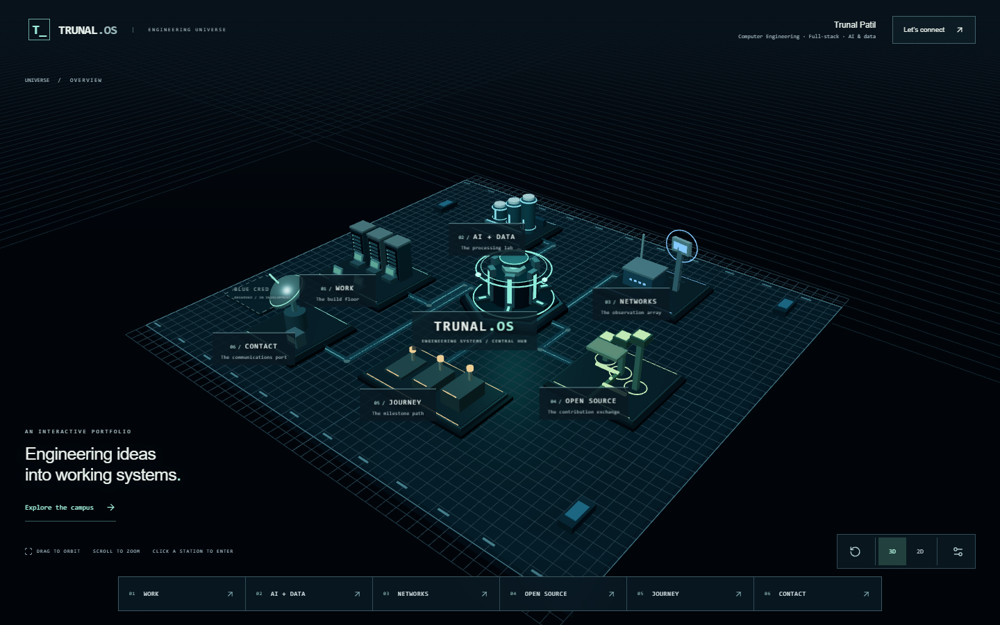

Before: rejected six-station view

Large floor grid, small separated structures, no distinct Skills or Nitrix destination.
After: seven-district campus

Finite terrain and grouped architecture. Readable name and role; independent Skills, Experience and evidence districts. The owner's subjective verdict remains pending.